Laboratory
GNU HEALTH LIMS: Laboratory Information Management System for the Healthcare and Biomedical sectors
GNU LIMS, also known as Occhiolino, is a modern Laboratory Information Management System for the healthcare and biomedical sectors, that has emerged as a GNU Health sub-project.
The Laboratory Modules manage the request, creation and evaluation of laboratory analyses. As far as the LIMS (Laboratory Information Management System) functionality, GNU Health is very flexible. You will be able to link it to the patient chart and to the financial management of the Health Center.
It is able to link to financial management, and create services and invoices / billing from the laboratory requests. Occhiolino has been integrated to GNU Health since the very beginning.
Laboratory Order request

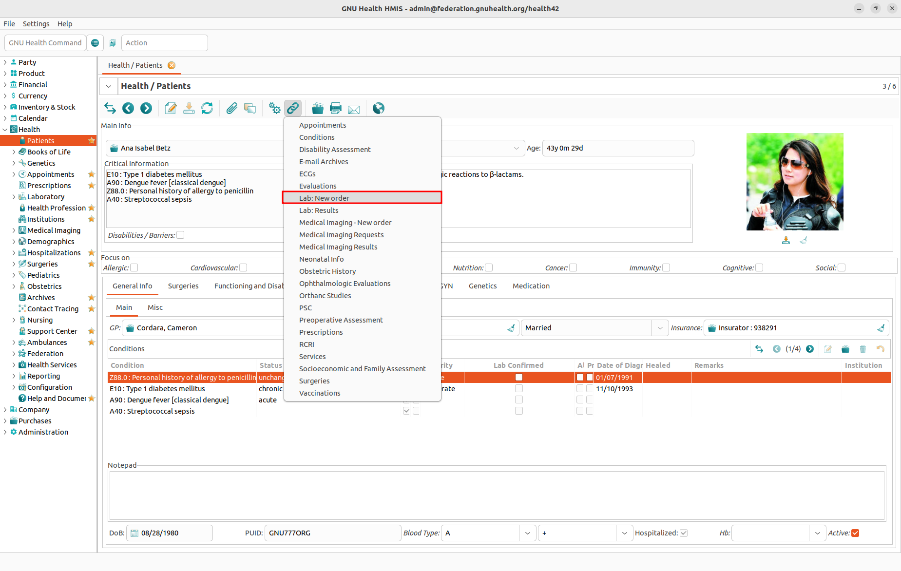
To create a new Lab Test Request record there are two possibilities:
Click on the Relate button in the patient form and choose the Request Lab Test command.
Click on the Request Lab Test command in the main navigation.
In either case a dialog will open that allows you to enter the following information:

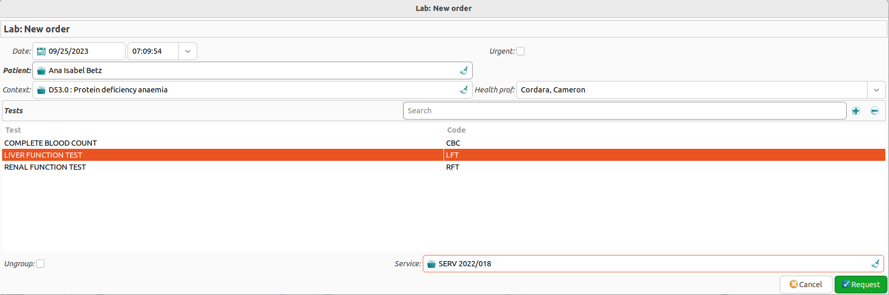
Date: The date and time of the request (default values are the current date and time)
Source: Can be
PatientorOther, for the first case it takes a Patient object, otherwise a stringUrgent: A checkbox to indicate an urgent request
Health Prof: The name of the health professional requesting the laboratory test
Context: It can be a suspected or existing health condition, a regular checkup, etc.
Tests: The list of tests requested
The only mandatory field is Tests and is has to contain at least one element.
Test Types
The laboratory module allows you to chose from a list of different lab tests and to create the specific one that you need, with their analytes, normal ranges, etc..
Managing Laboratory Test requests

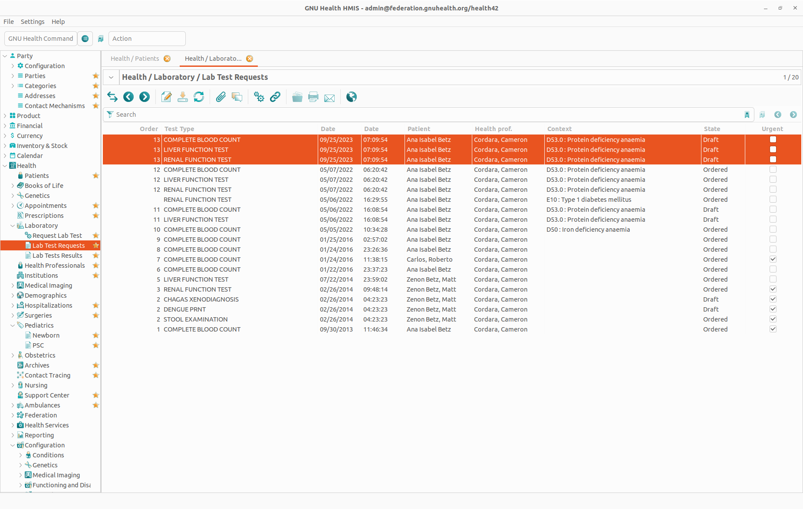
To check for new laboratory test request and to create test reports, the members of the laboratory staff will open the section in the main navigation under:
Health → Laboratory → Lab Test Requests
This brings up the list of Lab Test Requests, showing all information described above.
Updating Health Services

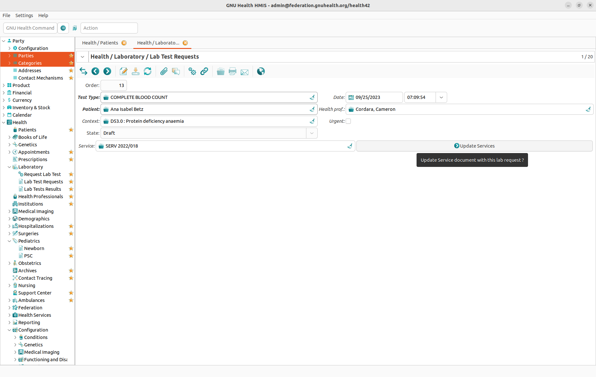
Lab orders contain one or many different lab tests. If the health professional associated the order to a particular health service document, this will be included on each test. Once the test is ready to be processed, the lab test can be included in the service document by clicking on the “Update Services”. At this point, you could also assign the test to another service document than the default one.
Creating the lab test

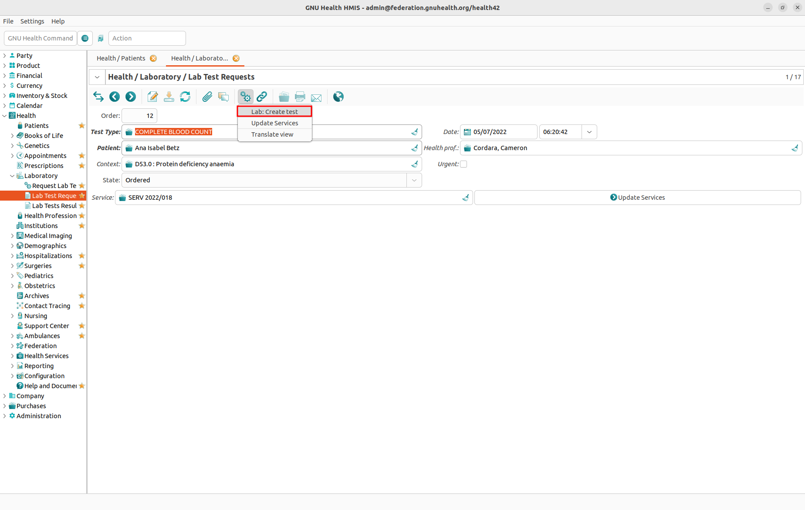
In addition there is a State column indicating whether a request is a Draft or Ordered. As soon as a laboratory staff member creates a laboratory test by clicking the Action button and selecting the Lab: Create Test command, the state of the request will change from Draft to Ordered. In addition the font color of the request will change from blue to black, making it easier to distinguish between pending requests and requests being processed.
It is at this point where all the analytes associated to the lab test type are created and ready to be processed by the analyzer.
In the screenshot, a single order contains three lab test requests.
Laboratory Reports

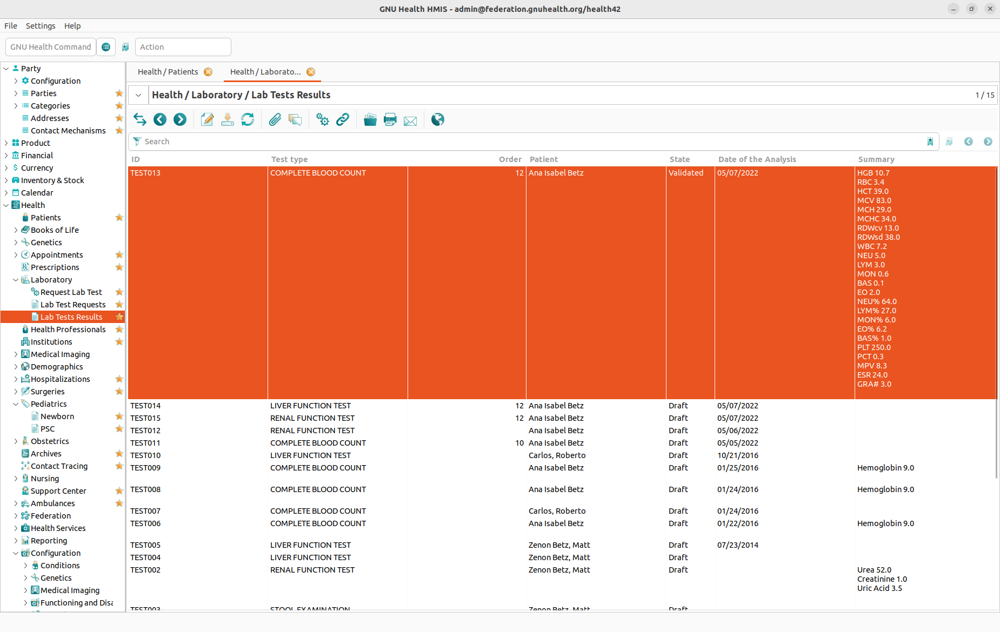
GH Command: Lab
A laboratory test record allows for the storage of the values of all test criteria contained in a specific test plus some extra information.
To access test results there are two possibilities:
Click on the Relate button in the patient form and choose the Lab: Reports command.
Click on the Health → Laboratory → Lab Test Results command in the main navigation.
The Lab Tests Results form is structured as follows:
Main Info

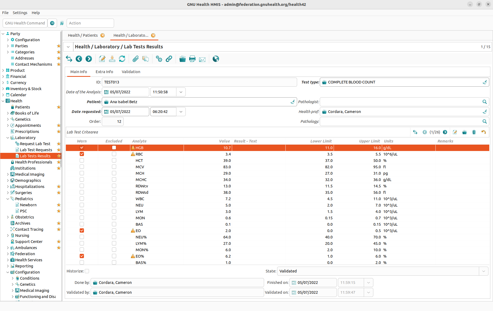
The Main Info tab provides information about the patient and about the test as a whole. The majority of this information comes from the laboratory test request. Relevant information on this form is the order and its date, the requesting health professional, the technician who made the test and the lab manager who validated it, and the date when it was validated.
In the lower half of the Main Info tab there is the Lab Test Criteria table. This table allows to enter the following information for each criterion of the test:
Warn : It will automatically be set if the value is out of range. The physician can also set it regardless of the value.
Excluded : Check this field to ignore this analyte from the test
Analyte : The actual parameter to be checked
Value: The result obtained on that analyte.
Result - Text: For non-quantitative results. For instance, the urine aspect.
Lower Limit, Upper Limit and Units: Default range for the normal values on the specific analyte.
Remarks: Any particular note related on the result.
Extra Info and Validation
The Extra Info tab offers room for a summary of the results and a diagnosis. The Validation tab provides a cryptographic digest hash and the status of the record. The lab test can be also digitally signed. This functionalities are provided in the GNU Health crypto packages.
The print layout of a laboratory test is called a laboratory report. You can preview and print laboratory reports from the Lab Test Results form by clicking the Report button and choosing the Lab Report action. Any anomalous value (i.e. a value below the lower limit or above the upper limit of a test criterion) is printed in red.
You can directly access the lab reports using the “Lab” command line.
Double clicking on the lab test, you will enter the form view, with detailed information about the test.
Displaying, printing or e-mailing the lab test results and labels

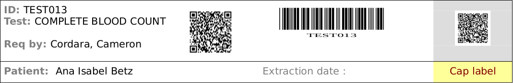
Once the lab test has been generated, the technician can print the lab test label (eg, code-39 barcodes) to be processed by the analyzer.

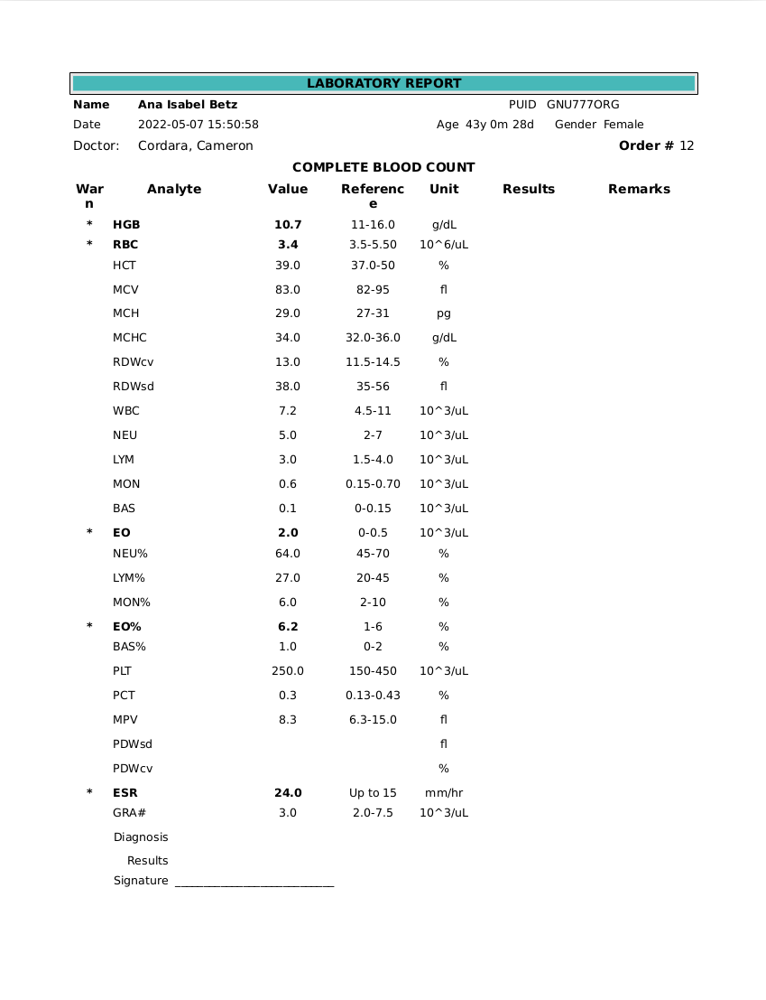
By default, the report format in GNU Health is PDF, but it can be configured to other formats (like LibreOffice ODT)
In addition, the GNU Health client has the option of emailing the reports.
Configuration
To configure the available laboratory tests, go to the Health → Configuration → Laboratory section in the main menu. There you have two options: You can create, edit, or delete test types (including their test criteria), and you can configure the units used in the tests.
Lab Test Units

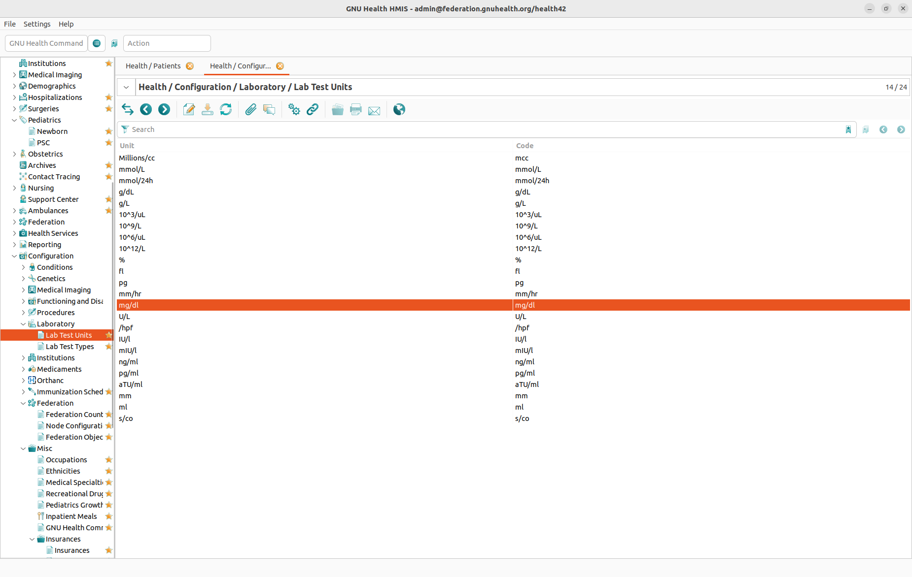
By double clicking on Health → Configuration → Laboratory → Lab Test Units you will get the list of all units defined in the system. Configuring a unit is quite simple, since there are only two fields:
Unit
Code (in most cases identical to Unit)
Lab Test Types

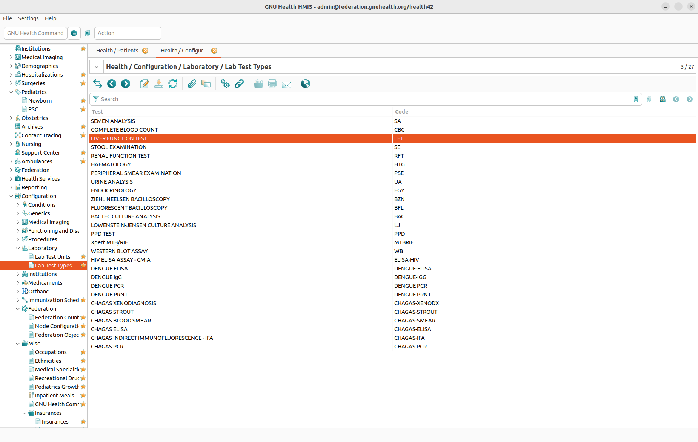
By double clicking on Health → Configuration → Laboratory → Lab Test Types you will get the list of all test types defined in the system. A test type serves as a template for an individual test. It contains a list of test criteria, including information about standard values for each test criterion. It is also linked to a product which allows to properly charge the test’s cost to the patient.
Main Info Tab

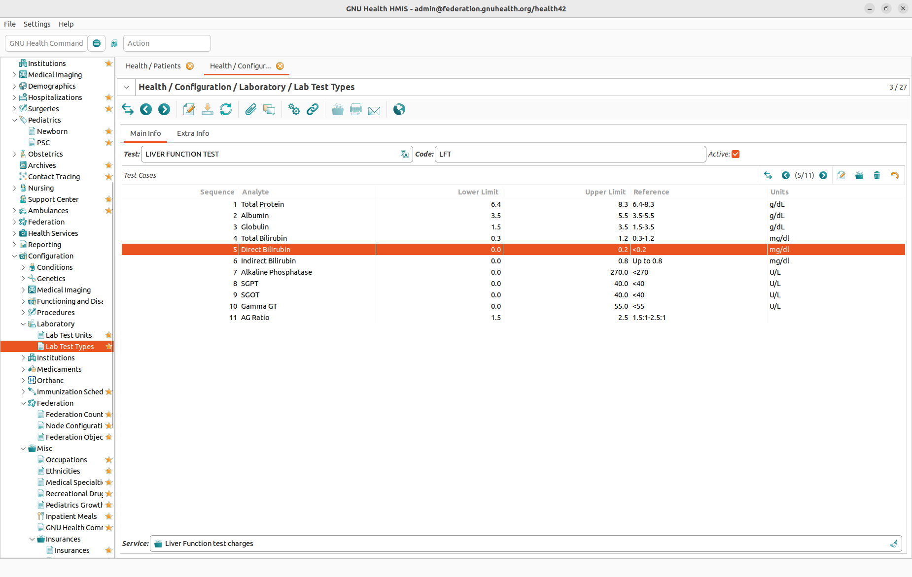
In the Main Info tab of the test types form you can manage the following information:
Test: The full name of the test (typically in capital letters)
Code Unique code for the test
Active If this flag is set, the lab test will be shown.
Service Product / Service associated to the lab test.
Below there is the list of Test Cases (or test criteria, as they are called elsewhere) of a test type. Each test case consists of the following information:
Sequence: A number to create an order within the test cases of a test type
Analyte: The substance or aspect to be analysed
Lower Limit: The lower limit of the range where a value is considered to be normal or not critical (used for information purposes, but also used to print a test case in red if a value is outside the range)
Upper Limit: The upper limit of the range where a value is considered to be normal or not critical (used for information purposes, but also used to print a test case in red if a value is outside the range)
Reference: A text field to add more information about the expected values of a test case
Units: The unit of the values in a test cases (used for Upper Limit, Lower Limit, and the test value itself)
Using the Service field at the bottom of the Main Info tab each test type is linked to a product. The product defines the price of a test to be charged to the patient. So for each test type record you will need a product record; this product record is typically named after the test type.
Extra Info Tab
The Extra Info tab contains a text field Description for additional information about a test type.
Interfaces with Laboratories and LIMS
GNU Health allows entry of the results of the analytes manually for any type of test. However, in many cases, it’s not feasible to enter this information manually, since it will be a lot of work and prone to human error.
Generally, the health professional creates a lab test order, and this is sent to a laboratory. When the laboratory processes the order, the results are sent back in either paper or digital form. Moreover, in larger institutions, the center connects with their own laboratories and lab systems. The interface can automatically retrieve the results from the lab and upload them to GNU Health.
In order to automate the task for processing the data, both the health institution and the laboratory need to agree in the way the data format and transferred. There are different formats and message exchange methods (csv, xml, web services, HL7, … ), and they can fit different scenarios.
Basic workflow
In most cases, we would need to set up a basic workflow. Let’s think about a basic hemogram / Complete Blood Count (CBC)
The health professional creates a test order, that contains one (or more) lab test type, with its unique ID. This lab test ID includes key information such as the lab test type, patient, ordering physician, date of request, …
The information on that test ID is then sent to the lab
The lab prints the test ID labels and place them on the test tube
The nurse extracts the blood sample from the patient and places in the tube labeled with the unique lab test ID
The sample is then taken to the analyzer, this reads the bar code of the lab test and processes the CBC
The lab technician generates the report with the result for each analyte associated to the lab test request ID
This result is sent to GNU Health in the way agreed by both parties (laboratory and institution)
GNU Health LIMS interface will process and upload the result to the lab test.
Of course, there can be higher or lower degree of automation, but most of this steps will exist in many scenarios.
Interface Tool
As part of the GNU Health installation, there is a tool named gnuhealth-data-import that will take csv or ods data files and upload the results to GNU Health.
This program reads CSV or ODS formatted files that contain the following fields:
test_id
analyte_code, this field will be searched in LIS system.
analyte_name, this field will be searched in LIS system too, for analyte_name in LIS system will be changed depend on user language, so we prefer use anylyte_code if possible.
result
result_text
_ignore, if its value is ‘yes’, this line will be ignore to import.
_type, set its value to ‘labtest’ if this csv or ods file is labtest data.
Warning
Field analyte_code is introduced in gnuhealth 4.4.0, the older test result data in LIS system will not have this field or value is None, please check in gnuhealth GUI:
Laboratory > Lab Tests Results > Code field of Lab Test Critearea.
User can use the below script to auto add code:
$ python3 his-utils/scripts/upgrade-utils/5.0/update_lab_critearea.py -h
In gnuhealth-data-import data direcory, there are two sample files: 4-labtests.csv and 4-labtests.ods, that contains the results of the test “TEST001” and “TEST006”, “Complete Blood Count - CBC”
You can customize the program (GNU Health server name, credentials, …), as well as the lab test result file. Of course, the name of the lab test result can be change to meet your needs.
You can find the latest version of gnuhealth-data-import tool in the HIS source repository on the development branch :
https://codeberg.org/gnuhealth/his/src/branch/test/tryton/scripts/gnuhealth-data-import
Requirements
This current components and versions are:
GNU Health : 5.0
Proteus Tryton library : 7.0
Pandas
odfpy
Installing proteus:
$ pip3 install --user "proteus>=7.0,<7.1"
Usage
Invoke the program and pass the csv formatted file as an argument e.g.:
$ python3 gnuhealth-data-import.py -f data/4-labtests.csv -H <HOST> -p <PORT> -u <USER> -P <PASSWORD> -d <DB>
More informations can be found:
$ python3 gnuhealth-data-import.py --help
The main program steps are :
Test connection to the GNU Health server
Check that the Lab test has been created on GNU Health (eg, TEST006)
Check that the analytes from the csv or ods files are on the LIS system.
Upload the results.